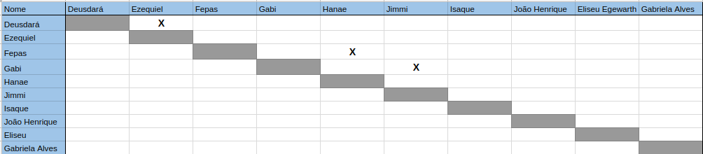
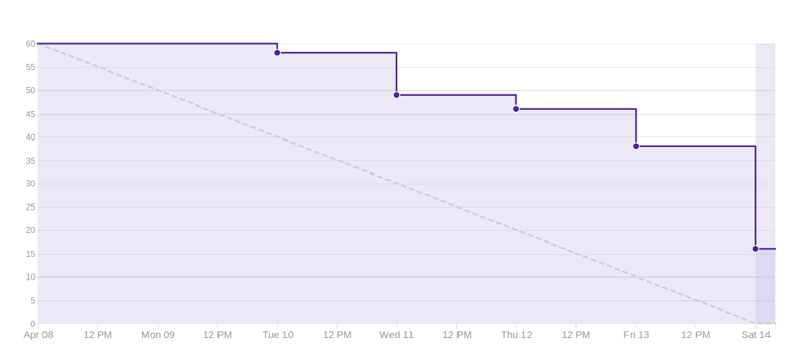

Sprint 4
Duração
Data início: 08/04/2018Data término: 14/03/2018
Duração: 7 dias
Objetivos
- Ampliar o conhecimento da equipe sobre o projeto;- Diminuir o risco de baixa produção da equipe;
- Deploy contínuo;
- Aumentar a interação dos membros.
Sprint Backlog
Documentar sprint 4 #167Deploy contínuo #162
Aplicar Material Design #153
Criar mapa de interação #174
Criar Product Backlog #172
Treinamento de Git #171
Treinamento React Native #170
Adequar burndown de riscos #169
Criar relatório de metricas e indicadores #168
Criar documento de requisitos de qualidade #158
Aplicar Redux para controle de estados #155
Aplicar Axios para requisições na API #154
Reunião para trocar figurinhas #150
Atualizar metodologia #137
Criar Docker React-Native #87
Criar Canvas #41
Papéis
- Product Owner: João Egewarth
- Scrum Master: Isaque Alves
- DevOps: Eliseu Egewarth
- Arquitetura: Gabriela Alves
- Desenvolvedores: Beatriz Hanae, Ezequiel De Oliveira, Felipe Campos, Gabriela Guedes, Guilherme Deusdará, Vitor Leal.
Pareamento
Pontos
Planejados:
- 49 PontosAdicionados:
Débito Técnico:- 5 pontos
Viabilidade Técnica:
- 0 pontos.
Executados:
- 45 pontosBurndown
Revisão
Duração: 1 hora.Nesta revisão foram apresentados todos os artefatos alcançados durante a sprint. Além de ser definido que deveria flexibilizar os testes para esta sprint, considerando a curva de aprendizagem.
Dívidas Técnicas
Fazer barramento de serviços #14Durante a execução da atividade notou que havia o impedimento da refatoração da API para concluir essa atividade.
Configuração para Deploy #162Retrospectiva
Duração: 30 minutos.Pontos positivos
- Ritmo de produção (velocity).- Pareamentos com compartilhando de conhecimentos.
- Definição de ferramentas para auxiliar no desenvolvimento do projeto.
- Ampliação na cobertura dos testes.
- Configuração do coreralls ( não é admissível que ninguém diminua a cobertura).
- Boot da daily ser realizado no período da manhã.
- Aprender sobre API.
- Maior dedicação do João Egewarth.
- Melhorou a observação dos membros de MDS e EPS.
- MDS teve maior ajuda mútua.
- Cuidar da a área que tem maior interesse e mais apreciam.
- Melhoraram os testes.
- Curva de aprendizado nos testes.
- Necessidade de entender melhor o redux.
- React Native minimizou a curva de aprendizagem.
Pontos Negativos
- Impedimentos do grupo de EPS em se tornarem coaches.- Problemas técnicos com as máquinas.
- Prestar maior atenção aos treinamentos.
- Melhorar o pareamento.
- Docker (possui um domínio próprio) e inserir no readme.
- Melhorar o planejamento melhorar e a interdependência na mesma sprint.
- Erros na organização da semana.
- Time não soube como parear bem.
- Não existe docker para react native.
- Melhorar a velocidade de produção dos documentos e disponibilização das fontes bibliográficas.
- Priorização das issues.
Quadro de conhecimento
O quadro de conhecimento da sprint pode ser encontrado aqui.Frequência de commits
A frequência de commits pode ser encontrada aquiDesempenho
Riscos
Risco |
Ação Preventiva |
Ação Reativa |
Garantir ambiente de homologação |
Planejar e ajustar a entrega até a R1 |
Iniciar o trabalho o quanto antes possível, buscar ajuda externa e pareamento. |
Feedback
A transparência e a presença dos coachs junto a equipe permitiu minimizar as dificuldades de interação entre os membros, assim a equipe teve uma melhor adaptação e foram percebidas novas formas de executar suas atividades reduzindo as reuniões que outrora eram exaustivas.
Assim, por meio das implementações das correções e as padronizações expostas na reunião passada, permitiram ao time otimizar o tempo com um planejamento prévio das atividades realmente pertinentes à reunião. Dessa forma, o time conseguiu pode terminar mais uma reunião dentro do tempo esperado. Além disso é perceptível que o time demonstra avanços quanto a se auto-organizar sem a necessidade de um intermediador.
É importante mencionar que outra decisão para a próxima sprint foi manter uma forma de melhor de aproveitar as horas documentadas. Assim a pontuação do time é baseada em horas onde cada ponto representa o seu dobro em tempo, por exemplo: 1 ponto corresponde a 2 horas de trabalho, acreditamos que isso pode ajudar a tornar mais efetiva a pontuação do time.
O time teve uma melhor adaptação a tecnologias e ao git, pois foi percebida uma das maiores curva de aprendizagem comparada as sprints anteriores. Vale ressaltar que o time continuou solucionando suas dúvidas em comunidades e junto aos colaboradores técnicos disponíveis na FGA.
Em relação as sprints passadas houve melhoria na comunicação entre MDS, aumentando o compartilhamento de conhecimento e ajuda entre eles. Enquanto, a equipe de EPS ainda encontra dificuldades para organizar o planejamento dentro do horário previsto, sendo necessário uma segunda reunião para coordenar a próxima sprint. Tal dificuldade atrapalha a transparência das atividades, pois MDS não consegue entender as atividades da equipe de EPS. Finalmente nesta sprint o pareamento de EPS funcionou. No entanto, certas duplas tiveram impedimentos para esse procedimento devido às atividades secundárias dos membros do time.